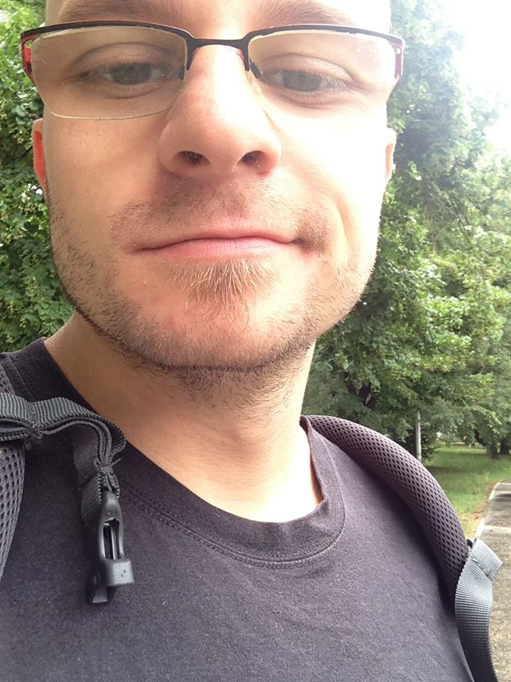

Hello,
I am
Željko Nešić
Let me introduce myself.
I am philosopher and developer
As a Philosopher I am keen to understand working of the mind, and I am intereseted in how to reproduce it in artifical envirioment.
As a Developer I am passionate about semantic structures that arise from wisely architected software.
Language as a phenomena is something unites those two passions of mine.
Skills with programing languages is how I make money.
As Myamoto Musashi have said.
If you know the Way broadly you will see it in everything.
I put that in practise, by building high quality applications for the web and iOS.
Finding common optimal patterns across web and mobile applications,
I feel confident to take up any challenge of building high quality software.
Enough of pump up talk, let's get concrete!
These are the applications that I have built:
Central European League2006-pres.
www.european-league.comCMS, Statistics and Player Registration System for international league of american football
StackLAMP [MySQL, PHP] + Frontend
{kind=link}
{kind=link}
{kind=link}
{kind=link}
Elastyc2009-2010
www.elastyc.netCloud ERP, CMS, web shop builder
Developed dynamic form builder for easier integration with the running bussineses.
Integration of solution into the workflow of couple of medium-sized and one large-size company
Stack Javascript [Ajax] and MSSQL, VBScript
{kind=link}
Koozoo2010-2013
www.koozoo.comSan Francisco Startup for social streaming of geolocated video.
Built video streming solution, web and mobile applications.
Our iOS app was highlighed at SXSW 2013
Worked with Python [Django], Postgres, MongoDb, RabbitMQ [WebSockets], Protobuffer
Javascript [jQuery, KnockoutJS] and html/css
Objective-C, video streaming
{kind=link}
{kind=link}
{kind=link}
Scuddle 2013-2014
www.scuddle.comSan Francisco Startup for hiring kids out of college.
Built couple of iterations of their iOS app, now their main product.
Worked with Objective-C
{kind=link}
{kind=link}
DSTV2013
Architected and led team to build an iOS application for streaming TV content.
Localized on over of dozen of local flavours.
Worked WithObjective-C, pen and paper
Ariadne2014
Solution for making live events interactive on your phone.
Built web vector based editor on top of Google Maps and iOS application for displaying layed out data.
Stack Ruby [Rails], Postgres [PostGIS], Heroku
Typescript [Angular, SVG, Google Maps]
Objective-C, Swift
Mozzart Fantazzi2014
fantazzi.mozzartsport.comEuropean Champions League Fantasy Football for local betting house
In two months with the team of two we devised full application used by tens of thousands players
StackPython [Django], Postgres, Redis, Heroku
Livescript [Angular], Jade, Stylus
{kind=link}
{kind=link}
{kind=link}
Nice to meet you.
This website is done built in Jade and Stylus in 4 hours using Roots, no prior content prepared.
That is ninjitsu in practice.
I want to live on different places of the planet with my wife Sanja. And we want to bring our cat Megi and dog Lara with us.
I do few side projects in free time
Side
These are my social/coding outlets.
GitHub @popara
StackOverflow@popara
Twitter @poparasan
And for the lolz!
Google Plus 103998615913751119248If you want to contact me click something of the links below.
SkypePoparica